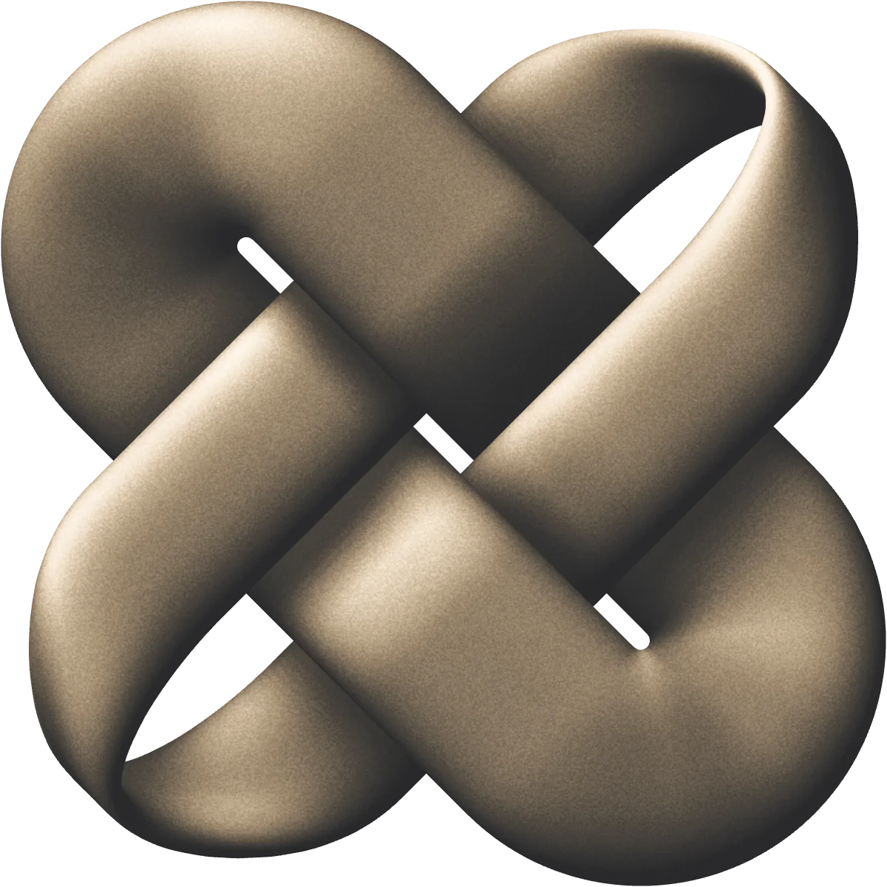

The Aporia
a student philosophy magazine
Two loops woven through each other, from the magazine's logo. Pulled, they stretch into a line and the menu comes out, but they never come apart.

a student philosophy magazine
Two loops woven through each other, from the magazine's logo. Pulled, they stretch into a line and the menu comes out, but they never come apart.